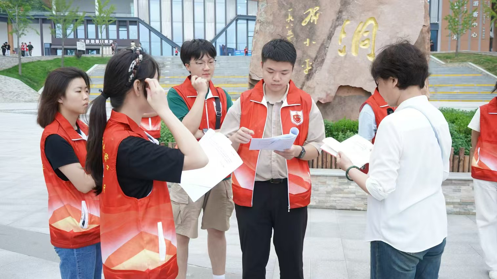
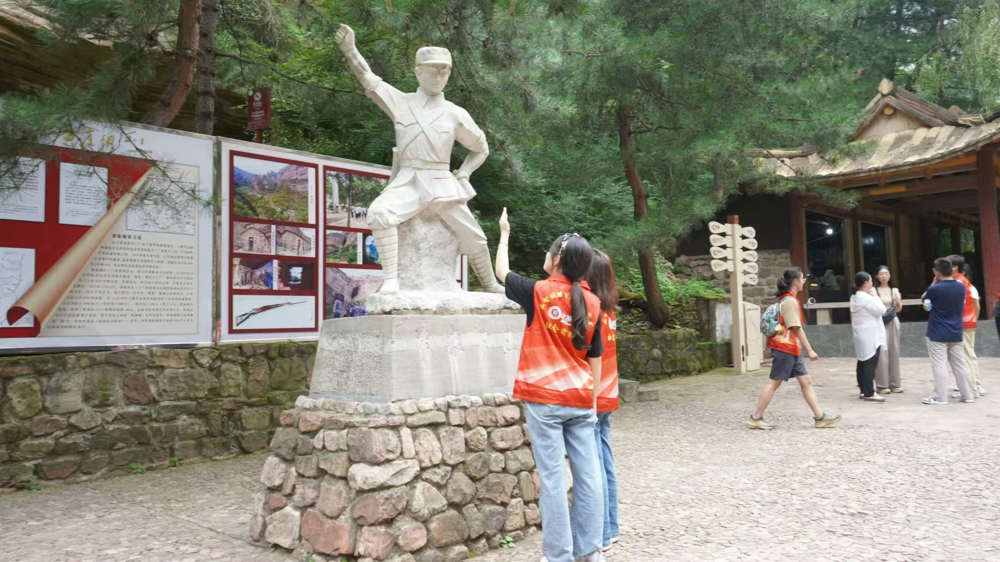

清晨的阳光洒在巍峨的太行山上，中北大学“数智赋能百年红色家书”暑期社会实践团在指导教师杜瑞平老师的带领下，怀着对历史的敬仰，踏上了前往黄崖洞旧址的旅程。
黄崖洞位于太行山脉的中部，是抗日战争时期八路军的重要兵工厂所在地，被誉为“没有围墙的抗战博物馆”。黄崖洞兵工厂重视培养和锻炼革命军事工业科技人才及管理人才。在建设和生产过程中，八路军总部从延安抗日军政大学等单位调来一批高级技术人员，还拥有一批专业技术熟练的工人。这些人才运用所学先进技术，结合抗战实际需求，开创和研发了新式技术与武器。1941年成立的太行工业学校，从各所工厂抽调了一批高级知识分子进行教学，学生除了来自工厂，还有一部分来自部队的青年战士。太行工业学校在战争年代为根据地培养了一大批军工干部，这些学员后来在华北、东北的军工厂里发挥了骨干作用。黄崖洞兵工厂不仅为抗日战争的胜利制造了大量武器，也为人民军工培养了大批优秀技术人员和管理人才，而太行工业学校的成立进一步延续和发展了培养军工人才的使命，为中国的军工事业做出了重要贡献。中北大学的前身就是1941年八路军总部在太行山上创办的我党我军第一所兵工学校——太行工业学校，与黄崖洞兵工厂流淌着相同的红色血脉。
沿着蜿蜒盘旋的山路，实践团成员们沿着革命先辈曾经走过的足迹一路向前。黄崖洞作为八路军兵工厂的所在地，是抗战时期华北地区最重要的军工生产基地之一。这里的每一块岩石、每一寸土地，都承载着抗日先辈们用鲜血和生命铸就的英雄传奇。在讲解员的带领下，成员们参观了兵工厂遗址，聆听着那些尘封已久的英雄故事，感受着军工精神的永恒力量。在兵工厂遗址，那些斑驳的墙壁和历史照片仿佛在无声地诉说着过去的峥嵘岁月。实践团成员们在这片沉寂的土地上，似乎能听见当年机器的轰鸣和战士们的呐喊，他们的心灵深受震撼，对革命先辈们不屈不挠的斗志有了更为深刻的理解。
受那段一手执枪卫国家，一手执笔学文化的光辉岁月的感染，实践团成员们在黄崖洞脚下举行了一场别开生面的朗诵活动。阳光透过树叶洒在每一张年轻的脸庞上，实践团成员全体成员齐声朗诵黄崖洞保卫战的伟大胜利，歌颂了伟大的革命精神，通过用短视频的方式将红色文化的精髓融入现代科技，使其在新时代焕发出新的生命力，走进更多人的心中。
此次寻访，不仅是一堂生动的实践课，更是一场深刻的精神洗礼。中北大学“数智赋能百年红色家书”暑期社会实践团的成员们在历史的洗礼中汲取力量，纷纷表示要把从此次活动中汲取到的力量转化为实际行动，为传承兵工传统、弘扬革命精神贡献力量。要用数智赋能，让红色家书焕发新的光彩，让中北大学的兵工精神在新时代续写新的篇章。
黄崖洞铸军工伟业，数字化承红色精神
2024年08月21日

